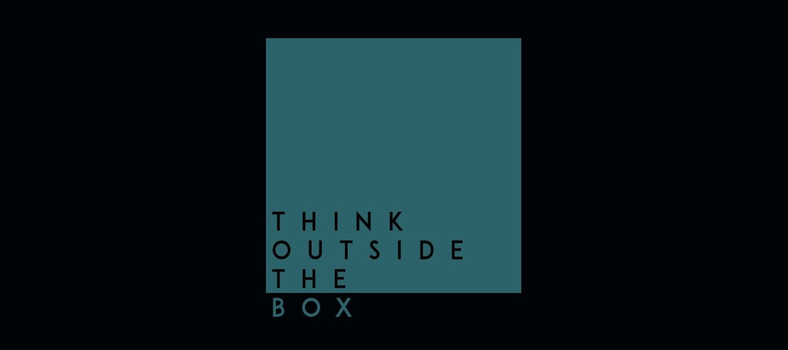
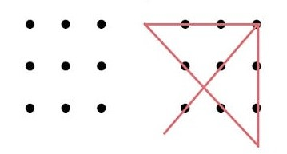

2023-01-05
Lygometry – Think outside the box
প্রবন্ধ-ইংরেজি
You have familiarity with the name of the Louvre Museum, right? But do you know where the Louvre Museum is the most isolated? Seven room number.
Why? It has a north entrance and a south entrance on both sides. The chamber is divided into two pieces by a wall in the middle, and I entered from the north entrance. As I walked in, I noticed 5 paintings on the large wall in front of me. And because nobody else is here, I'm pretty excited. These 5 exquisite paintings are mine alone. I stand there and observe everything. However, I quickly came to a rather peculiar realization. I, however, was the only person gazing at the wall.

Nobody was moving in that direction. People were moving away from or around the wall. Why? Why weren't these 5 paintings noticed by anyone? Therefore, it raised the question of what lay beyond the wall. I took a peek. On the other side, there were more than 300 individuals. At the same time, they were all vying for a sight of Da Vinci's masterwork. The great "Monalisa".
The wall is one example. We all share this dread and vulnerability in our hearts. Which side of the wall will you eventually find yourself on? is what you are engaged in right now. will endure the test of time. Will your presence be felt? And celebrity and fortune are not the only factors. It is about principles, and making something is what beauty is. The Latin word for shadow or gloom is L-Y-G-O. Metry is a measurement of quantity. Lygometry means quantifying things you know you do not know. The open and unanswered questions.

Imagine a picture of a circle. Inside the circle is everything you know, outside is everything you don't know. Lygometry is the edge of the circle, the way to innovativeness, things you realize you don't have the foggiest idea about, evaluating the absence of information. This is very strong. In any case, it's not quite as predominant as you would anticipate that it should be, considering that it is the way to imagination and creativity.
Lygometry is a way of measuring the amount of movement or changes in something. This can be helpful for entrepreneurs, as it can help them understand how their businesses are doing and where they need to make changes. Let's discuss what to do before we begin.
What lies outside the observable cosmos is one thing we are certain we don't know. What percentage of the universe's stars are there? What kind of life is present at the ocean's bottom? The Pyramids' construction method. You can now reasonably understand the types of things I'm referring to.
Lygometry can be used for your -
- Engineering innovations,
- Business,
- Career,
- Profession,
- Research and Development
in a more ordered way to help you advance, even when these items are dispersed across various timelines and have no link to one another.
Questions arise, who does lygometry well? Normally, Two groups:
- Children
- Computerized reasoning (Artificial intelligence AI).
What's more, I thoroughly consider time. A change in outlook is to update our discussion about information, about our opinion on mankind's enormous issues. Since supposing that we do, then, at that point, we ought to. These youngsters are accomplishing something beneficial. Machines are getting it done. There is not a really obvious explanation for why we can't. In the event that we do, our most concerning issues will turn into our greatest arrangements.
You could see what other guitar players could do, and the kinds of sounds they could make. Furthermore, You realized you proved unable and you couldn't. Lygometry. In any case, that prompted an innovative flow. Then you should attempt to make your own sounds.
In the end, Simply put, it is the method involved with estimating things that we know about our obliviousness. It is a fairly new concept and exceptionally thought that was coined by Amin Toufani, a Harvard University alumni, and the creator of Adaptability.org.
I have a big belief in lygometry and this word -
"The easiest way to think outside the box is to not know where the box is."

* First published on LinkedIn/mydul on December 26, 2022